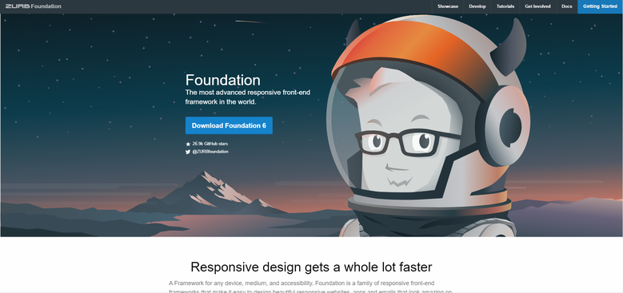

Good practice
Good practice is a hugely important element of web design. It is a set of rules that ensure the website is fast to load, easy to access, reliable and engaging to the user. Those things can be achieved through several means, starting from good structure and flow of the website and ending on smart design and scripts that make browsing the website much easier, more responsive and interesting to the user.
My main inspiration for my web-page was the Zurb foundation website.
Me and my team mate Kaden though that it had a really cool and slick design that was very easy to navigate and understand. We also liked how the menu was position on the top and was pretty much the first thing that the user sees when entering the website and is easy to access and control at all times. I also like the big banner that includes the logo of the website and separates the body content from the navbar. I think it makes the look of the page much cleaner and allows the user to learn the layout really, really fast.

We also very much like the simple yet effective style applied to the body. In essence, a simple column layout keeps all the most important information within its bounds. I recognized that it most definitely is a really good layout for mobiles which are so important on nowadays markets. I also found it really easy to read and access and appreciated that it remained consistent throughout the entire page.